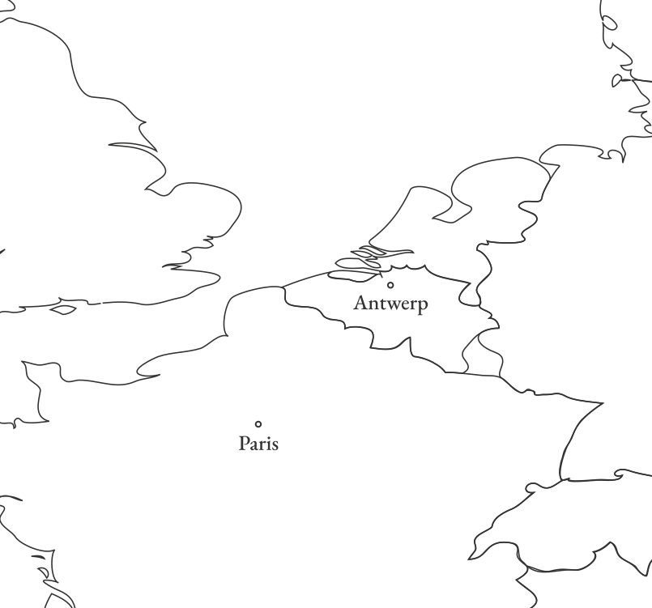

Christopher Plantin, owner of the Officina Plantiniana - the largest
publishing house in 16th-century Europe—was more than just a printer;
he was a shrewd businessman navigating a world of political and
religious upheaval.
One of his business tactics was pragmatic adaptation. In a time of
deep divisions, Plantin printed for both Protestants and Catholics, a
testament to his cunning ability to balance competing interests.
Around 1550, Plantin moved from Paris to Antwerp.

A thriving hub of commerce and culture. The city's wealthy merchant
class had a taste for luxury goods, including finely printed books,
making it an ideal location for an ambitious craftsman. Starting as a
bookbinder and leatherworker, Plantin laid the groundwork for his future
printing empire.
To deflect suspicion and distance himself from the Reformation label,
Plantin cleverly positioned himself as a staunch supporter of the Roman
Catholic Church, corresponding with powerful figures. He proposed a
project that would appeal directly to the ultra-Catholic King Philip II
of Spain: a monumental, multi-lingual edition of the Bible—the Biblia
Regia (King’s Bible).
This strategic move paid off handsomely. Plantin was appointed
Arch-Printer to the King of Spain, a prestigious title that brought with
it lucrative contracts for printing missals, breviaries, and other
religious texts for the Spanish market and its colonies.
In November 1576, just as Plantin established his business at its new
location on the Vrijdagmarkt, Antwerp was ravaged by the “Spanish Fury.”
Mutinous Spanish troops wreaked havoc on the city, damaging trade with
Spain, Plantin’s big market. Once again, Plantin found himself
navigating a precarious situation working for the both sides of the
conflict. He even served as the official printer for the States General
(leading the Dutch Revolt) and the Calvinist city council of Antwerp.